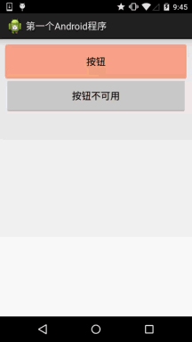
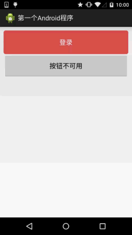

この節の引言：
今日紹介するのは、Android基本コンポーネントの中の2つのボタンコンポーネント、Button(普通のボタン)とImageButton(画像ボタン)です。実はImageButtonとButtonの使い方は基本的に似ており、画像に関することは後のImageViewと同じです。そのため、この節ではButtonのみを解説します。また、ButtonはTextViewのサブクラスなので、TextViewの多くの属性もButtonに適用できます。実際の開発でButtonに対して行うことといえば、ボタンのいくつかの状態に応じた操作です。例えば、ボタンが押されたときにある色、離されたときに別の色、またはボタンが使用不可のときに別の色、といった具合です。上記の実装はつまり、次のようなDrawableリソースによって行います。StateListDrawableこのようなDrawableリソースを使用して実現します。つまりdrawableリソースファイルを記述するだけです。これくらいにして、すぐにこの節の内容を始めましょう〜
1.StateListDrawableの紹介：
StateListDrawableはDrawableリソースの一種で、異なる状態に応じて異なる画像効果を設定できます。キーとなるノードは< selector >、私たちはButtonのbackground属性をこのdrawableリソースに設定するだけで、ボタンを押したときに異なるボタンの色や背景を簡単に実現できます！
設定できる属性は次のとおりです：
- drawable:参照するDrawableビットマップ。これを一番前に置くことで、コンポーネントの通常状態を表します〜
- state_focused:フォーカスを取得しているかどうか
- state_window_focused:ウィンドウフォーカスを取得しているかどうか
- state_enabled:コントロールが使用可能かどうか
- state_checkable:コントロールがチェック可能かどうか、例:checkbox
- state_checked:コントロールがチェックされているかどうか
- state_selected:コントロールが選択されているかどうか、スクロールホイールがある場合に適用
- state_pressed:コントロールが押されているかどうか
- state_active:コントロールがアクティブ状態かどうか、例:slidingTab
- state_single:コントロールが複数の子コントロールを含む場合、1つの子コントロールだけを表示するかどうかを決定します
- state_first:コントロールが複数の子コントロールを含む場合、最初の子コントロールが表示状態かどうかを決定します
- state_middle:コントロールが複数の子コントロールを含む場合、中間の子コントロールが表示状態かどうかを決定します
- state_last:コントロールが複数の子コントロールを含む場合、最後の子コントロールが表示状態かどうかを決定します
2.ボタンの押下効果の実装：
では、まず3つの画像背景を準備しましょう。通常、ボタンの引き伸ばしによる変形を避けるために、.9.pngをボタンのdrawableとして使用します！まず見てみましょう実行効果図：

コード実装：
<?xml version="1.0" encoding="utf-8"?>
<selector xmlns:android="http://schemas.android.com/apk/res/android">
<item android:state_pressed="true" android:drawable="@drawable/ic_course_bg_fen"/>
<item android:state_enabled="false" android:drawable="@drawable/ic_course_bg_pressed"/>
<item android:drawable="@drawable/ic_course_bg_cheng"/>
</selector>
レイアウトファイル:activity_main.xml
<Button
android:id="@+id/btnOne"
android:layout_width="match_parent"
android:layout_height="64dp"
android:background="@drawable/btn_bg1"
android:text="按钮"/>
<Button
android:id="@+id/btnTwo"
android:layout_width="match_parent"
android:layout_height="64dp"
android:text="按钮不可用"/>
MainActivity.java：
public class MainActivity extends Activity {
private Button btnOne,btnTwo;
@Override
protected void onCreate(Bundle savedInstanceState) {
super.onCreate(savedInstanceState);
setContentView(R.layout.activity_main);
btnOne = (Button) findViewById(R.id.btnOne);
btnTwo = (Button) findViewById(R.id.btnTwo);
btnTwo.setOnClickListener(new OnClickListener() {
@Override
public void onClick(View v) {
if(btnTwo.getText().toString().equals("按钮不可用")){
btnOne.setEnabled(false);
btnTwo.setText("按钮可用");
}else{
btnOne.setEnabled(true);
btnTwo.setText("按钮不可用");
}
}
});
}
}
3.色値を使用して角丸ボタンを描画する
多くの場合、必ずしも美工(デザイナー)がいるとは限りませんよね。あるいはPSや「毁图秀秀」を使えない、または怠け者で自分で画像を作りたくない、ということもあります。そんなときは、自分でコードを書いてボタンの背景にできます。欲しい色を自由に選べます。では、角丸のボタン背景をカスタマイズしてみましょう〜。ここではもう1つのdrawableリソース、ShapeDrawableが登場します。詳しくは説明しませんが、後で各drawableを詳しく紹介します。ここでは使えるだけでOKです。EditTextのBackground属性を変更するだけです。ここではdrawableリソースのみを掲載します！
まず効果図を見てください：

bbuton_danger_rounded.xml：
<?xml version="1.0" encoding="utf-8"?>
<selector xmlns:android="http://schemas.android.com/apk/res/android">
<item android:state_pressed="true"><shape>
<solid android:color="@color/bbutton_danger_pressed" />
<stroke android:width="1dp" android:color="@color/bbutton_danger_edge" />
<corners android:radius="@dimen/bbuton_rounded_corner_radius"/>
</shape></item>
<item android:state_enabled="false"><shape>
<solid android:color="@color/bbutton_danger_disabled" />
<stroke android:width="1dp" android:color="@color/bbutton_danger_disabled_edge" />
<corners android:radius="@dimen/bbuton_rounded_corner_radius"/>
</shape></item>
<item><shape>
<solid android:color="@color/bbutton_danger" />
<stroke android:width="1dp" android:color="@color/bbutton_danger_edge" />
<corners android:radius="@dimen/bbuton_rounded_corner_radius"/>
</shape></item>
</selector>
color.xml:
<?xml version="1.0" encoding="utf-8"?>
<resources>
<color name="bbutton_danger_pressed">#ffd2322d</color>
<color name="bbutton_danger_edge">#ffd43f3a</color>
<color name="bbutton_danger_disabled">#a5d9534f</color>
<color name="bbutton_danger_disabled_edge">#a5d43f3a</color>
<color name="bbutton_danger">#ffd9534f</color>
<color name="text_font_white">#FFFFFF</color>
</resources>
dimens.xml:
<dimen name="bbuton_rounded_corner_radius">5dp</dimen>
4.Material Designの水波効果を持つButtonの実装
あなたのAndroidスマートフォンが5.0以上のシステムであれば、次のようなボタンのクリック効果に馴染みがあるでしょう：
実装効果図：

速い方は押した後の効果で、遅い方は長押しした後の効果です！
実装ロジック：
1. ImageButtonを継承します。もちろんButtonやViewに置き換えても構いません。ここでは筆者が亀を中央に置きたかったのでImageButtonを継承しました
2. まず、2つのPaint(ペイント)オブジェクトを作成します。1つは底部の背景色を描画し、もう1つは波紋の拡散を描画するためのものです
3. 次に最大半径を計算し、開始半径を一定時間ごとに増加させて最大半径に達したら、状態をリセットします！
PS: おおよその核心部分です。学び始めたばかりだとカスタムViewに馴染みがないかもしれませんが、大丈夫です。ここでは理解するだけで十分です。後で詳しく説明します。もちろん、自分で掘り下げてみても構いません。コメントはかなり詳細です〜
実装コード：
カスタムImageButton：MyButton.java
package demo.com.jay.buttondemo;
import android.content.Context;
import android.graphics.Canvas;
import android.graphics.Paint;
import android.os.SystemClock;
import android.util.AttributeSet;
import android.view.MotionEvent;
import android.view.ViewConfiguration;
import android.widget.ImageButton;
/**
* Created by coder-pig on 2015/7/16 0016.
*/
public class MyButton extends ImageButton {
private static final int INVALIDATE_DURATION = 15; //每次刷新的时间间隔
private static int DIFFUSE_GAP = 10; //扩散半径增量
private static int TAP_TIMEOUT; //判断点击和长按的时间
private int viewWidth, viewHeight; //控件宽高
private int pointX, pointY; //控件原点坐标（左上角）
private int maxRadio; //扩散的最大半径
private int shaderRadio; //扩散的半径
private Paint bottomPaint, colorPaint; //画笔:背景和水波纹
private boolean isPushButton; //记录是否按钮被按下
private int eventX, eventY; //触摸位置的X,Y坐标
private long downTime = 0; //按下的时间
public MyButton(Context context, AttributeSet attrs) {
super(context, attrs);
initPaint();
TAP_TIMEOUT = ViewConfiguration.getLongPressTimeout();
}
/*
* 初始化画笔
* */
private void initPaint() {
colorPaint = new Paint();
bottomPaint = new Paint();
colorPaint.setColor(getResources().getColor(R.color.reveal_color));
bottomPaint.setColor(getResources().getColor(R.color.bottom_color));
}
@Override
public boolean onTouchEvent(MotionEvent event) {
switch (event.getAction()) {
case MotionEvent.ACTION_DOWN:
if (downTime == 0) downTime = SystemClock.elapsedRealtime();
eventX = (int) event.getX();
eventY = (int) event.getY();
//计算最大半径：
countMaxRadio();
isPushButton = true;
postInvalidateDelayed(INVALIDATE_DURATION);
break;
case MotionEvent.ACTION_UP:
case MotionEvent.ACTION_CANCEL:
if(SystemClock.elapsedRealtime() - downTime < TAP_TIMEOUT){
DIFFUSE_GAP = 30;
postInvalidate();
}else{
clearData();
}
break;
}
return super.onTouchEvent(event);
}
@Override
protected void dispatchDraw(Canvas canvas) {
super.dispatchDraw(canvas);
if(!isPushButton) return; //如果按钮没有被按下则返回
//绘制按下后的整个背景
canvas.drawRect(pointX, pointY, pointX + viewWidth, pointY + viewHeight, bottomPaint);
canvas.save();
//绘制扩散圆形背景
canvas.clipRect(pointX, pointY, pointX + viewWidth, pointY + viewHeight);
canvas.drawCircle(eventX, eventY, shaderRadio, colorPaint);
canvas.restore();
//直到半径等于最大半径
if(shaderRadio < maxRadio){
postInvalidateDelayed(INVALIDATE_DURATION,
pointX, pointY, pointX + viewWidth, pointY + viewHeight);
shaderRadio += DIFFUSE_GAP;
}else{
clearData();
}
}
/*
* 计算最大半径的方法
* */
private void countMaxRadio() {
if (viewWidth > viewHeight) {
if (eventX < viewWidth / 2) {
maxRadio = viewWidth - eventX;
} else {
maxRadio = viewWidth / 2 + eventX;
}
} else {
if (eventY < viewHeight / 2) {
maxRadio = viewHeight - eventY;
} else {
maxRadio = viewHeight / 2 + eventY;
}
}
}
/*
* 重置数据的方法
* */
private void clearData(){
downTime = 0;
DIFFUSE_GAP = 10;
isPushButton = false;
shaderRadio = 0;
postInvalidate();
}
@Override
protected void onSizeChanged(int w, int h, int oldw, int oldh) {
super.onSizeChanged(w, h, oldw, oldh);
this.viewWidth = w;
this.viewHeight = h;
}
}
<code>
<p><b>color.xml：</b></p>
<pre>
<?xml version="1.0" encoding="utf-8"?>
<resources>
<color name="reveal_color">#FFFFFF</color>
<color name="bottom_color">#3086E4</color>
<color name="bottom_bg">#40BAF8</color>
</resources>
activity_main.xml：
<RelativeLayout xmlns:android="http://schemas.android.com/apk/res/android"
xmlns:tools="http://schemas.android.com/tools"
android:layout_width="match_parent"
android:layout_height="match_parent"
tools:context=".MainActivity">
<demo.com.jay.buttondemo.MyButton
android:id="@+id/myBtn"
android:layout_width="match_parent"
android:layout_height="64dp"
android:src="@mipmap/ic_tur_icon.html"
android:background="@color/bottom_bg"
android:scaleType="center"/>
</RelativeLayout>
ソースコードのダウンロード(ASプロジェクトだよ)：ButtonDemo.zip
この節のまとめ：
この節では、Buttonの実際の開発におけるいくつかの使い方を紹介しました。まだ学んでいない内容もあるかもしれませんが、ここでは知っておくだけで大丈夫です。後で学ぶときに自然と詳しく説明します。ありがとうございました〜